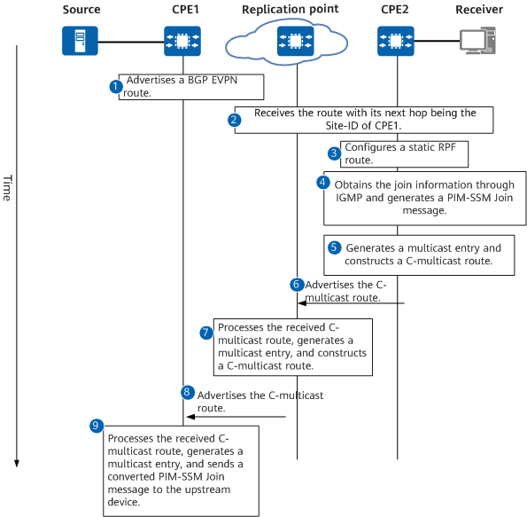
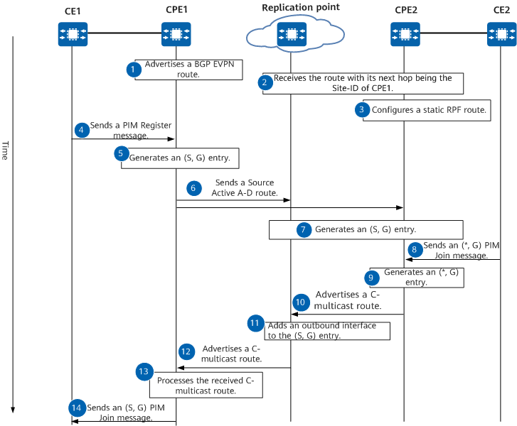

Multicast Member Join Process
After BGP MVPN peer relationships are established between CPEs and RRs and between replication points and RRs, they can use BGP MVPN routes to transmit the join information of C-multicast members. The following example describes how a multicast member joins a multicast group in PIM (S, G) and PIM (*, G) modes.
(S, G) PIM Join
Figure 1 describes how a multicast member joins a multicast group in the scenario where CPE2 initiates an (S, G) PIM Join request to CPE1.
Figure 1 Time sequence for a multicast member to join a multicast group
Procedure for joining a multicast group
- CPE1 advertises a BGP EVPN address family IP prefix route carrying the SD-WAN extended community attribute to the replication point and CPE2 through the RR.
- After receiving the route, the replication point and CPE2 save the source unicast route, and the next hop of the route is the Site-ID of CPE1.
- A static RPF route is configured on CPE2, and the next hop of the route is set to the Site-ID of the replication point.
- After receiving an IGMP join request, CPE2 generates a PIM-SSM Join message.
- After generating the PIM-SSM Join message, CPE2 subscribes to the RPF route. The next hop of this route is the Site-ID of the replication point because a static configuration takes precedence over the dynamic route configuration.
- CPE2 generates a multicast entry, constructs a C-multicast route carrying the extended community attribute, and sends the C-multicast route to the replication point.
- After receiving the C-multicast route, the replication point creates a multicast entry and subscribes to the RPF route (the next hop of the dynamically learned RPF route is CPE1).
- The replication point then reconstructs a C-multicast route carrying the extended community attribute and sends this route to CPE1.
- After receiving the C-multicast route, CPE1 creates a multicast entry or adds an outbound interface to an existing entry, searches for an RPF route, and sends a PIM-SSM Join message to the upstream device.
(*, G) PIM Join
Figure 2 describes the (*, G) PIM Join implementation.
Figure 2 Time sequence for a multicast member to join a multicast group in PIM (*, G) mode
- CPE1 advertises a BGP EVPN address family IP prefix route carrying the SD-WAN extended community attribute to the replication point and CPE2 through the RR.
- After receiving the route, the replication point and CPE2 save the source unicast route, and the next hop of the route is the Site-ID of CPE1.
- A static RPF route with a specified priority is configured on CPE2, and the next hop of the route is replaced with the Site-ID of the replication point.
- After receiving traffic, CE1 sends a PIM Register message to CPE1.
- After receiving the PIM Register message, CPE1 generates an (S, G) entry.
- CPE1 sends a Source Active A-D route to the replication point and CPE2.
- After receiving the Source Active route, the replication point and CPE2 generate (S, G) entries and search for an RPF route. Currently, there is no matched outbound interface.
- After receiving an IGMP join request, CE2 sends an (*, G) PIM Join message to CPE2.
- After receiving the (*, G) PIM Join message, CPE2 generates an (*, G) entry. The (S, G) entry inherits the outbound interface of the (*, G) entry and search for an RPF route. The next hop of the RPF route is the Site-ID of the replication point because a static configuration takes precedence over the dynamic route configuration.
- CPE2 constructs a C-multicast route carrying the extended community attribute and sends this route to the replication point.
- After receiving the C-multicast route, the replication point adds the outbound interface to the (S, G) entry and finds that the next hop of the dynamically learned RPF route is CPE1.
- The replication point then reconstructs a C-multicast route carrying the extended community attribute and sends this route to CPE1.
- After receiving the C-multicast route, CPE1 creates a multicast entry or adds an outbound interface to an existing entry and searches for an RPF route.
- CPE1 sends a PIM-SSM Join message to CE1.